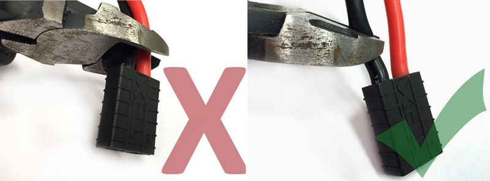
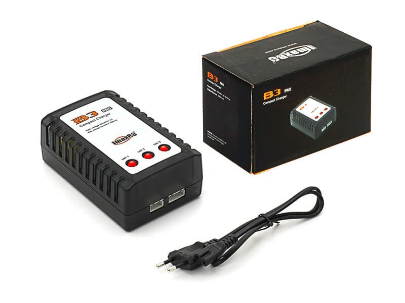
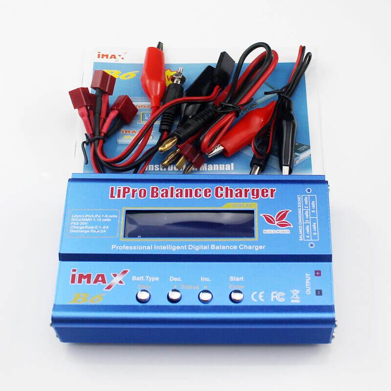

When building robots, drones and electronic products supplying power is a critical factor. Batteries are used to supply power to the components where the product is required to be mobile. Lithium-Polymer (Li-Po) batteries are commonly used as a power source for many drones, mobile robots, remote control cars and other electronics products. In this article, I would like to mention some of the facts I have learned through my experience and the things I have learned from the internet about using Li-Po batteries.
Li-po batteries are usually high-current batteries which should be handled with care. Before dive deep into this, let’s compare these li-po batteries to lithium-ion batteries that are commonly found in our mobile phones and many consumer electronic products.
Comparison of li-po batteries to li-ion batteries

From the comparison above it can be seen why lithium ion batteries are more popular for usage in mobile phones and devices that require less power and li-po batteries for the drones and RC cars which require higher current.
Types of lipo batteries
Li-po batteries come in various sizes, capacities, voltages and etc. But it can be scene that a single cell voltage of these batteries is the same. To get higher voltages batteries are connected in series. Let’s dive into the numbers and letters that can be seen in the label of the li-po battery packs.

1. Voltage / cell count
The battery pack consists of several batteries connected in series and parallel which indicated in the battery wrapping. The nominal voltage of a single cell is 3.7V which is the voltage that the battery supplies when its being discharged halfway. When the battery is fully charged it will give around 4.2V and when it’s adviced not to drain a single cell more than 3V. Li-Po battery packs come in different voltages such as 3.7V, 7.4V, 11.V and so on which are integer multiplies of the nominal voltage of a single cell battery.
Here, the “3S” indicated in the battery tells that the battery pack has 3 single cells connected in series. If some pack has “2S2P”, it indicates that the battery pack has 2 single cells connected in series first and two of these are connected parallelly.
My personal choice for my robotics applications and electronic projects are the 2S 7.4V battery packs as they can be regulated down to get 5V/3V3 for microcontrollers and sensors or stepped up to get 12V for the motor applications. If we use 3S 11.V battery pack for 12V application, you might have to use a step up/ step down regulator to remove the effect which is caused by when the battery is fully charged it will have 12.6V and when it drains it drops down below 12V.
2. Capacity
Water tanks store water where water can be taken out when needed for applications. Batteries are similar to water tanks, but they store energy rather than water. The capacity of the battery measures how much energy can be stored in a battery. Normally the capacity is given in "mAh" in the label of the battery. The capacity value comes in handy to measure how long the battery can supply the required power to the circuit when a given amount of current is drawn from the circuit. For an example, the battery given above has 2200mAh and if the circuit draws 100mA the circuit can be powered for,
2200mAh/100mA = 44hours
3. Discharge rating
You might have wander about the huge number with the suffix “C” letter written on the label of the battery pack. This is called the “C” rating of the battery pack which is a widely used term to calculate the maximum discharging current that can be delivered without harming the battery. You cannot find the max current by only knowing the “C” rating alone. You also need the capacity of the battery for this too. You can just simply multiply the “C” rating with the capacity in Ah and you will get the max current in Amperes. For the above battery the max current for discharging is,
2.2Ahx20 = 22Amperes
4. Internal resistance
This value is something which is not indicated in the label of the battery pack. It has a reason for that which is the internal resistance value varies with the aging of the battery and the battery voltage. For a healthy battery pack this value can be several ohms but for a damaged battery this can be a large value which reduces the terminal voltage of the battery when delivering to a load.
Li-Po battery connectors
Li-po battery packs usually have 2 connectors for discharging and charging separately. Discharging socked only consists of 2 pins (positive and negative) while the charging socket consisting of numbering pins equal to number of cells + 1 usually. There are various connectors used for these sockets. Some common ones are,
-
Deans Connector

-
XT-60 Connector

-
JST-XH Connector

We can change the connectors when we need to extent the length of the wires. When changing the connector, we have to cut the wires of the discharging connector. Here we have to cut the ground wire first and then the positive wire.
Never cut both wires at the same time as the plier will short the terminals of the battery.

Also keep in mind not to swap the two terminals (use correct polarity) when connecting the socket to the electronic product.
Charging Li-Po batteries
Even though li-po batteries are less explosive than li-ion batteries, they should be handled with care. Li-po batteries have a smaller number of charging cycles compared to li-ion. Therefore, proper charging should be done to maintain the batteries in good health.
1. Selecting a charger

You all might have seen the cheap conventional charger which are readily available in electronic shops shown in the picture. These chargers don’t charge all the cells of the battery to the same level which degrades the battery a lot. This also causes to increase the internal resistance of a single cell in the long run which will totally destroy that cell. There are good balance chargers which monitor the current to each individual cell and charges in constant current/ constant voltage (CC/ CD) charging method which maintains the health of the battery. These chargers even can identify whether the battery is connected correctly. One of the chargers I am using currently is shown below. These can be ordered online.

One of the factors to keep in mind is that to never leave batteries charging unattended.
The max charging rate of the battery is indicated as the charging "C" rating. For the above battery it's "2C" which means that the maximum charging current is,
2.2Ah x 2 = 4.2Amperes
2. Series vs Parallel charging
Series charging is the conventional method we use which is to charge the battery packs one after another if we have many. But some drone owners are keeping multiple battery packs and are trying to charge them simultaneously using parallel chargers available in the market. Even though I haven’t tried this out by myself from the knowledge I have found in the internet tells not to use parallel charging as it can be really dangerous depending on the variety of batteries connected at the same time and the age of batteries.
3. Protecting the charging socket
Many of the battery packs have a JST- XH connector for the charging connector. When connecting to the charger and removing the wires of the connector can get pulled out or even get short circuit in long run. To solve that balance protector clips are used to cover the charging connector.

Storing lipo batteries
There are times where we don’t have time to spend doing our favorite electronic projects and we have to store our battery packs in a way that its health is not affected.
1. Using fireproof bags
As lithium ions react with oxygen when exposed to the air, a small puncture in the battery may lead to a fire. Therefore, fireproof bags are used to store the li-po batteries.

2. Li-Po storage charging
Li-Po batteries are not advisable to be stored at full discharged stage or fully charged stage. The balanced charger mentioned above has a function called the li-po store mode which charges or discharges each cell to 3.8V which is the commonly used voltage to store li-po batteries. It is advised to use this storage mode every time you are stopping using the battery for a couple of days.
Disposing lipo batteries
If you have accidently killed your battery or the battery is dead due to aging the batteries should be disposed in a proper way. These are the common steps to be taken to dispose a li-po battery. Please do these steps with caution and have necessary tools with you to face any malfunction of the battery.
- Discharge the li-po battery using the balance charge in a fireproof container
- Place the li-po battery terminals in a saltwater for at least 24 hours.
- Check to see whether the terminal voltage is 0V. If not go to step 2 again.
- Dispose the battery in the trash as these batteries are not harmful as most of the batteries using different chemistry.
After a quite lengthy article this marks the end. Here I wanted to share the things I have learned through experience and the internet. If we know all the necessary, stuff about li-po batteries we could save wasted batteries and increase the durability of our batteries while ensuring safety.
If you have learned something new from this article, please leave a comment below. If you have any suggestion and improvements to enhance the quality of my articles, please mention below.
Thank you. Stay tuned! ❤️